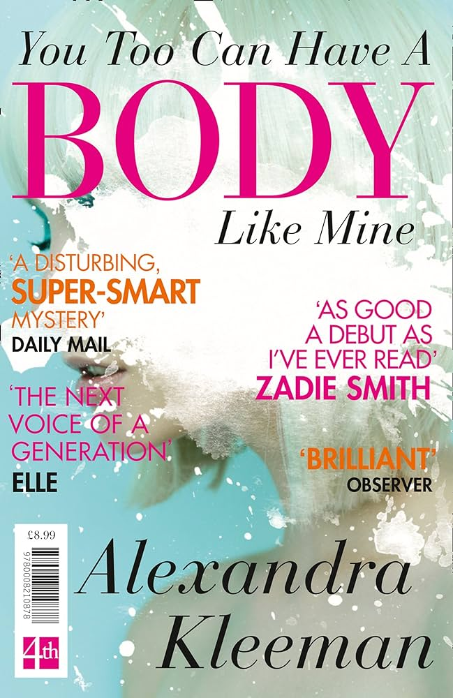
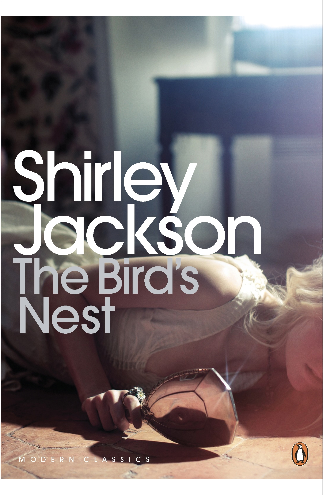
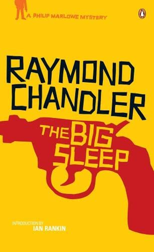
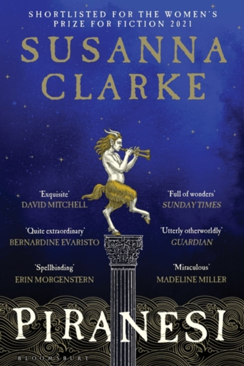

Haruki Murakami
Colorless Tsukuru Tazaki and His Years of Pilgrimage
Tsukuru Tazaki had four best friends at school. By chance all of their names contained a colour. The two boys were called Akamatsu, meaning ‘red pine’, and Oumi, ‘blue sea’, while the girls’ names were Shirane, ‘white root’, and Kurono, ‘black field’. Tazaki was the only last name with no colour in it. One day Tsukuru Tazaki’s friends announced that they didn't want to see him, or talk to him, ever again. Since that day Tsukuru has been floating through life, unable to form intimate connections with anyone. But then he meets Sara, who tells him that the time has come to find out what happened all those years ago.

Kurt Vonnegut
Cat's Cradle
Dr Felix Hoenikker, one of the founding 'fathers' of the atomic bomb, has left a deadly legacy to the world. For he's the inventor of 'ice-nine', a lethal chemical capable of freezing the entire planet. The search for its whereabouts leads to Hoenikker's three ecentric children, to a crazed dictator in the Caribbean, to madness. Felix Hoenikker's Death Wish comes true when his last, fatal gift to humankind brings about the end, that for all of us, is nigh...

Hanif Kureishi
The Buddha of Suburbia
Karim Amir lives with his English mother and Indian father in the routine comfort of suburban London, enduring his teenage years with good humor, always on the lookout for adventure and sexual possibilities. Life gets more interesting, however, when his father becomes the Buddha of Suburbia, beguiling a circle of would-be mystics. And when the Buddha falls in love with one of his disciples, the beautiful and brazen Eva, Karim is introduced to a world of renegade theater directors, punk rock stars, fancy parties, and all the sex a young man could desire. A love story for at least two generations, a high-spirited comedy of sexual manners and social turmoil, The Buddha of Suburbia is one of the most enchanting, provocative, and original books to appear in years.

Keith Waterhouse
Billy Liar
Billy Liar captures brilliantly the claustrophobic atmosphere of a small town. It tells the story of Billy Fisher, a Yorkshire teenager unable to stop lying - especially to his three girlfriends. Trapped by his boring job and working-class parents, Billy finds that his only happiness lies in grand plans for his future and fantastical day-dreams of the fictional country Ambrosia.

Yū Miri
Tokyo Ueno Station
Born in Fukushima in 1933, the same year as the Emperor, Kazu’s life is tied by a series of coincidences to Japan’s Imperial family and to one particular spot in Tokyo; the park near Ueno Station – the same place his unquiet spirit now haunts in death. It is here that Kazu’s life in Tokyo began, as a labourer in the run up to the 1964 Olympics, and later where he ended his days, living in the park’s vast homeless ‘villages’, traumatised by the destruction of the 2011 tsunami and enraged by the announcement of the 2020 Olympics. Akutagawa-award-winning author Yū Miri uses her outsider’s perspective as a Zainichi (Korean-Japanese) writer to craft a novel of utmost importance to this moment, a powerful rebuke to the Imperial system and a sensitive, deeply felt depiction of the lives of Japan’s most vulnerable people.

John Darnielle
Wolf in White Van
Welcome to Trace Italian, a game of strategy and survival! You may now make your first move. Isolated by a disfiguring injury since the age of 17, Sean Phillips crafts imaginary worlds for strangers to play in. From his small apartment in Southern California, he orchestrates fantastic adventures where possibilities, both dark and bright, open in the boundaries between the real and the imagined. As the creator of Trace Italian - a text-based, roleplaying game played through the mail - Sean guides players from around the world through his intricately imagined terrain, which they navigate and explore, turn by turn, seeking sanctuary in a ravaged, savage future America. Lance and Carrie are high school students from Florida, explorers of the Trace. But when they take their play into the real world, disaster strikes, and Sean is called to account for it. In the process, he is pulled back through time, tunneling toward the moment of his own self-inflicted departure from the world in which most people live. Brilliantly constructed, Wolf in White Van unfolds in reverse until we arrive at both the beginning and the climax: the event that has shaped so much of Sean’s life. Beautifully written and unexpectedly moving, John Darnielle’s audacious and gripping debut novel is a marvel of storytelling brio and genuine literary delicacy.
-

Alexandra Kleeman
You Too Can Have a Body Like Mine
A woman known only as A lives in an unnamed American city with her roommate, B, and boyfriend, C, who wants her to join him on a reality dating show called That's My Partner! A eats mostly popsicles and oranges, watches endless amounts of television, often just for the commercials— particularly the recurring cartoon escapades of Kandy Kat, the mascot for an entirely chemical dessert—and models herself on a standard of beauty that exists only in such advertising. She fixates on the fifteen minutes of fame a local celebrity named Michael has earned after buying up a Wally's Supermarket's entire, and increasingly ample, supply of veal. Meanwhile, B is attempting to make herself a twin of A, who in turn hungers for something to give meaning to her life, something aside from C's pornography addiction. Maybe something like what's gotten into her neighbors across the street, the family who's begun "ghosting" themselves beneath white sheets and whose garage door features a strange scrawl of graffiti: he who sits next to me, may we eat as one. An intelligent and madly entertaining novel reminiscent of The Crying of Lot 49, White Noise, and City of Glass, Alexandra Kleeman's unforgettable debut is a missing-person mystery told from the point of view of the missing person; an American horror story that concerns sex and friendship, consumption and appetite, faith and transformation, real food and reality television; and, above all, a wholly singular vision of modern womanhood by a frightening, "stunning" (Conjunctions), and often very funny voice of a new generation.

Stephen King
Different Seasons
Includes the stories “The Body” and “Rita Hayworth and Shawshank Redemption”—set in the fictional town of Castle Rock, Maine A “hypnotic” (The New York Times Book Review) collection of four novellas—including the inspirations behind the films Stand By Me and The Shawshank Redemption—from Stephen King, bound together by the changing of seasons, each taking on the theme of a journey with strikingly different tones and characters. This gripping collection begins with “Rita Hayworth and the Shawshank Redemption,” in which an unjustly imprisoned convict seeks a strange and startling revenge—the basis for the Best Picture Academy Award-nominee The Shawshank Redemption. Next is “Apt Pupil,” the inspiration for the film of the same name about top high school student Todd Bowden and his obsession with the dark and deadly past of an older man in town. In “The Body,” four rambunctious young boys plunge through the façade of a small town and come face-to-face with life, death, and intimations of their own mortality. This novella became the movie Stand By Me. Finally, a disgraced woman is determined to triumph over death in “The Breathing Method.” “The wondrous readability of his work, as well as the instant sense of communication with his characters, are what make Stephen King the consummate storyteller that he is,” hailed the Houston Chronicle about Different Seasons.

Italo Calvino
If on a Winter's Night a Traveler
If on a Winter's Night a Traveler is a marvel of ingenuity, an experimental text that looks longingly back to the great age of narration—"when time no longer seemed stopped and did not yet seem to have exploded." Italo Calvino's novel is in one sense a comedy in which the two protagonists, the Reader and the Other Reader, ultimately end up married, having almost finished If on a Winter's Night a Traveler. In another, it is a tragedy, a reflection on the difficulties of writing and the solitary nature of reading. The Reader buys a fashionable new book, which opens with an exhortation: "Relax. Concentrate. Dispel every other thought. Let the world around you fade." Alas, after 30 or so pages, he discovers that his copy is corrupted, and consists of nothing but the first section, over and over. Returning to the bookshop, he discovers the volume, which he thought was by Calvino, is actually by the Polish writer Bazakbal. Given the choice between the two, he goes for the Pole, as does the Other Reader, Ludmilla. But this copy turns out to be by yet another writer, as does the next, and the next. The real Calvino intersperses 10 different pastiches—stories of menace, spies, mystery, premonition—with explorations of how and why we choose to read, make meanings, and get our bearings or fail to. Meanwhile the Reader and Ludmilla try to reach, and read, each other. If on a Winter's Night is dazzling, vertiginous, and deeply romantic. "What makes lovemaking and reading resemble each other most is that within both of them times and spaces open, different from measurable time and space."

Kay Dick
They
They is a dream, a surreal nightmare which sends a shock right to the heart of our cultural complacency. As you read it you should remember that the men and women who live and die in it might easily be you. (They could be snatched out of your hand, quite suddenly, and pulped. No reason would be given, except pure destructive savagery.) Those who struggle in its pages to maintain their reason, their sanity, their capacity to love and hope, are not so far removed (nor are the forces that menace them) from our own and, as we fondly imagine, unruffled lives. As bureaucracy and governmental control proliferate, Kay Dick pleads for the individual and intellectual freedoms which are so rapidly being eroded. Her book is both a poignant celebration of these values and an anguished caveat.
-


-


-
